<!DOCTYPE HTML PUBLIC "-//W3C//DTD HTML 4.01 Transitional//EN" "http://www.w3.org/TR/html4/loose.dtd">
<html>

<!-- Mirrored from www.winsfordasc.co.uk/news2014.html by HTTrack Website Copier/3.x [XR&CO'2014], Sat, 05 Sep 2015 05:57:39 GMT -->
<head>
<meta http-equiv=Content-Type content="text/html; charset=UTF-8">
<title>News2014</title>
<meta name="viewport" content="width = 1048, minimum-scale = 0.25, maximum-scale = 1.60">
<meta name="GENERATOR" content="Freeway Pro 7.0.1">
<style type="text/css">
<!--
body { margin:0px; background-color:#fff; background-image:url(Resources/backgroundgradien.gif); background-repeat:repeat-x; height:100% }
html { height:100% }
form { margin:0px }
body > form { height:100% }
img { margin:0px; border-style:none }
button { margin:0px; border-style:none; padding:0px; background-color:transparent; vertical-align:top }
table { empty-cells:hide }
.f-sp { font-size:1px; visibility:hidden }
.f-lp { margin-bottom:0px }
.f-fp { margin-top:0px }
em { font-style:italic }
h1 { font-size:18px }
h1:first-child { margin-top:0px }
strong { font-weight:bold }
.body { color:#666; font-family:Arial,Helvetica,sans-serif; font-size:12px; text-align:justify }
.blue { color:#369 }
.style21 { font-size:14px }
.style198 { color:#666; font-family:Trebuchet MS,Arial,Helvetica,sans-serif; font-size:14px; line-height:17px; margin-left:0px; margin-right:0px; text-indent:0px; text-align:left }
.style61 { color:#000 }
.style114 { color:#666 }
.style195 { color:#000; font-family:Trebuchet MS,Arial,Helvetica,sans-serif; font-size:14px; line-height:17px; margin-left:0px; margin-right:0px; text-indent:0px; text-align:left }
.style72 { color:#666 }
.style180 { color:#000; font-family:Trebuchet MS,Arial,Helvetica,sans-serif; font-size:14px; line-height:17px; margin-left:0px; margin-right:0px; text-indent:0px; text-align:left }
.style27 { color:#f30; font-family:Trebuchet MS,Arial,Helvetica,sans-serif; font-size:14px }
.style190 { color:#f30; font-family:Trebuchet MS,Arial,Helvetica,sans-serif; font-size:14px }
.style211 { color:#666; font-family:Trebuchet MS,Arial,Helvetica,sans-serif; font-size:14px }
.style218 { color:#666; font-family:Trebuchet MS,Arial,Helvetica,sans-serif; font-weight:bold; font-size:14px }
.style225 { color:#666; font-family:Trebuchet MS,Arial,Helvetica,sans-serif; font-size:14px }
.style197 { color:#666; font-family:Trebuchet MS,Arial,Helvetica,sans-serif; font-size:14px }
.style212 { color:#000; font-family:Trebuchet MS,Arial,Helvetica,sans-serif; font-size:14px; line-height:17px; margin-left:0px; margin-right:0px; text-indent:0px; text-align:left }
.style222 { color:#666; font-family:Trebuchet MS,Arial,Helvetica,sans-serif; font-weight:bold; font-size:14px }
.style221 { color:#666; font-family:Trebuchet MS,Arial,Helvetica,sans-serif; font-size:14px }
.style175 { color:#666; font-family:Trebuchet MS,Arial,Helvetica,sans-serif; font-size:14px }
.style224 { color:#666; font-family:Trebuchet MS,Arial,Helvetica,sans-serif; font-size:14px }
.style228 { color:#666; font-family:Trebuchet MS,Arial,Helvetica,sans-serif; font-size:14px }
.style207 { color:#666; font-family:Trebuchet MS,Arial,Helvetica,sans-serif; font-size:14px }
.style223 { color:#666; font-family:Trebuchet MS,Arial,Helvetica,sans-serif; font-weight:bold; font-size:14px }
.style220 { color:#666 }
.style204 { color:#666; font-family:Trebuchet MS,Arial,Helvetica,sans-serif; font-size:14px; line-height:17px; margin-left:0px; margin-right:0px; text-indent:0px; text-align:left }
.style213 { color:#000; font-family:Trebuchet MS,Arial,Helvetica,sans-serif; font-size:14px; line-height:17px; margin-left:0px; margin-right:0px; text-indent:0px; text-align:left }
.style215 { color:#666; font-family:Trebuchet MS,Arial,Helvetica,sans-serif; font-size:14px; line-height:17px; margin-left:0px; margin-right:0px; text-indent:0px; text-align:left }
.style216 { color:#222; font-family:Trebuchet MS,Arial,Helvetica,sans-serif; font-size:14px; line-height:17px; margin-left:0px; margin-right:0px; text-indent:0px; text-align:left }
.style202 { color:#666 }
.style176 { color:#000; font-family:Trebuchet MS,Arial,Helvetica,sans-serif; font-size:14px; line-height:17px; margin-left:0px; margin-right:0px; text-indent:0px; text-align:left }
.style91 { color:#000; font-family:Trebuchet MS,Arial,Helvetica,sans-serif; font-size:14px }
.style45 { color:#666; font-family:Trebuchet MS,Arial,Helvetica,sans-serif; font-size:14px }
.style134 { color:#666; font-family:Trebuchet MS,Arial,Helvetica,sans-serif; font-size:14px }
.style163 { color:#000; font-family:Trebuchet MS,Arial,Helvetica,sans-serif; font-size:14px; line-height:17px; margin-left:0px; margin-right:0px; text-indent:0px; text-align:left }
.style133 { color:#666; font-family:Trebuchet MS,Arial,Helvetica,sans-serif; font-size:14px; line-height:17px; margin-left:0px; margin-right:0px; text-indent:0px; text-align:left }
.style145 { color:#f30; font-family:Trebuchet MS,Arial,Helvetica,sans-serif; font-size:14px }
.style177 { color:#666; font-family:Trebuchet MS,Arial,Helvetica,sans-serif; font-size:14px }
.style136 { color:#000; font-family:Trebuchet MS,Arial,Helvetica,sans-serif; font-size:14px; line-height:17px; margin-left:0px; margin-right:0px; text-align:left }
.style199 { color:#666; font-family:Trebuchet MS,Arial,Helvetica,sans-serif; font-size:14px; line-height:17px; margin-left:0px; margin-right:0px; text-align:left }
.topNav { color:#fff; font-family:Lucida Grande; font-size:12px; text-align:right }
.style101 { font-family:Verdana,Arial,Helvetica,sans-serif; font-size:14px }
.style4 { font-size:13px }
#PageDiv { position:relative; min-height:100%; max-width:1048px; margin:auto }
#currentDateAction1 { overflow:visible }
#AlishaNationalmedalpodium { left:433px; top:593px; width:350px; height:292px; float:right; margin:5px; overflow:visible }
#photo1a { left:672px; top:2212px; width:111px; height:163px; float:right; margin:5px; overflow:visible }
#liverpoolsprintsteamphoto { left:0px; top:2724px; width:634px; height:317px; overflow:hidden }
#NWRageteammedals2014 { left:0px; top:3239px; width:546px; height:322px; overflow:hidden }
#RegionalYouth2014squadweb { left:0px; top:4831px; width:624px; height:191px; overflow:hidden }
#item11 { overflow:visible }
#CCWinnTeam { left:0px; top:5922px; width:650px; height:286px; overflow:hidden }
#item9 { overflow:visible }
#item10 { overflow:visible }
#deathcampisurvivedhat { left:0px; top:6995px; width:300px; height:200px; overflow:hidden }
#deathcampisurvivedhat2 { left:312px; top:6995px; width:300px; height:200px; overflow:hidden }
#NMidsWinsfordTeam2014web { left:0px; top:8140px; width:600px; height:265px; overflow:hidden }
#item8 { overflow:visible }
#item7 { overflow:visible }
#item5 { overflow:visible }
#ArenaWinsfordTeam2013web1 { left:0px; top:10204px; width:700px; height:327px; overflow:hidden }
#item4 { overflow:visible }
#item3 { overflow:visible }
a.navHTML:link  { text-decoration: none; color:#FFFFFF }
a.navHTML:visited  { text-decoration: none; color:#FFFFFF }
a.navHTML:hover  { text-decoration: underline; color:#FF3300 }
a.navHTML:active  { text-decoration: underline; color:#FF3300 }
-->
</style>
<!--[if lt IE 7]>
<link rel=stylesheet type="text/css" href="css/ie6.css">
<style type="text/css">
#PageDiv { height:100% }
</style>
<![endif]-->
<script type="text/javascript">//<![CDATA[

var fwCurDate = {
	days: {en: ['Sunday, ','Monday, ','Tuesday, ','Wednesday, ','Thursday, ','Friday, ','Saturday, ']},
	months: {en: ['January','February','March','April','May','June','July','August','September','October','November','December', '_dy__m_ _d_, _y_']}
};

function writeDate(settings)
{
	var d = new Date(),
		str = fwCurDate.months[settings.lang][12];
	str = str.replace(/_dy_/, (settings.day ? fwCurDate.days[settings.lang][d.getDay()] : ""))
		 .replace(/_d_/, d.getDate())
		 .replace(/_m_/, fwCurDate.months[settings.lang][d.getMonth()])
		 .replace(/_y_/, d.getFullYear());
	document.write(str);
}


function FWStripFileFromFilterString(filterString)
{
	var start,end;
	var strSrc = "src='";
	var strRes = "";

	start = filterString.indexOf(strSrc);

	if(start != -1)
	{
		start += strSrc.length;
		
		end = filterString.indexOf("',",start);
		if(end != -1)
		{
			strRes = filterString.substring(start,end);
		}
	}

	return strRes;
}


var fwIsNetscape = navigator.appName == 'Netscape';


fwLoad = new Object;
function FWLoad(image)
{
	if (!document.images)
		return null;
	if (!fwLoad[image])
	{
		fwLoad[image]=new Image;
		fwLoad[image].src=image;
	}
	return fwLoad[image].src;
}


fwRestore = new Object;
function FWRestore(msg,chain) 
{
	if (document.images) 
		for (var i in fwRestore)
		{
			var r = fwRestore[i];
			if (r && (!chain || r.chain==chain) && r.msg==msg)
			{
				r.src = FWLoad(r.old);
				fwRestore[i]=null;
			}
		}
}


function FWLSwap(name,msg,newImg,layer,chain,trigger) 
{
	var r = fwRestore[name];
	if (document.images && (!r || r.msg < msg)) 
	{
		var uselayers = fwIsNetscape && document.layers && layer != '';
		var hld;
		if (uselayers)
			hld = document.layers[layer].document;
		else
			hld = document;
		var im = hld.getElementById(name);
		if (!im.old)
		{
			if(usingIEFix && im.runtimeStyle.filter)
				im.old = FWStripFileFromFilterString(im.runtimeStyle.filter);
			else
				im.old = im.src;
		}
		
		im.msg = msg;
		im.chain = chain;
		im.trigger = trigger;
		if (newImg) im.src = FWLoad(newImg);
		fwRestore[name] = im;
	}
}


function FWCallHit(func,targNum,msg)
{
	if(func)
		for (var i in func)
			func[i](targNum,msg);
}
function FW_Hit(frameset,chain,targNum,msg)
{
	if (frameset && frameset.length) {
		for (var i=0 ; i <frameset.length ; i++)
		{
			try {
				FW_Hit(frameset[i].frames,chain,targNum,msg);
			} catch(e) {}
		}
		FWCallHit(frameset.window["FT_"+chain],targNum,msg);
	}
	else
		FWCallHit(frameset.window["FT_"+chain],targNum,msg);
}


fwHit = new Object;
function FWSlave(frameset,chain,targNum,msg)
{
	if (msg==1) fwHit[chain]=targNum;
	FW_Hit(frameset,chain,targNum,1);
}

function FWSRestore(frameset,chain)
{
	var hit=fwHit[chain];
	if (hit)
		FW_Hit(frameset,chain,hit,0);
	fwHit[chain]=null;
}

function FWPreload()
{
	FWLoad("Resources/item2a.gif");
	FWLoad("Resources/item2.gif");
	FWLoad("Resources/item2ba.gif");
	FWLoad("Resources/item2b.gif");
	FWLoad("Resources/item2b1a.gif");
	FWLoad("Resources/item2b1.gif");
	FWLoad("Resources/item2b2a.gif");
	FWLoad("Resources/item2b2.gif");
	FWLoad("Resources/item2b3a.gif");
	FWLoad("Resources/item2b3.gif");
	FWLoad("Resources/item2b4b.gif");
	FWLoad("Resources/item2b4.gif");
}
//]]></script>
<script type="text/javascript">//<![CDATA[
var usingIEFix = false;
//]]></script>

<!--[if lt IE 7]>
<script type="text/javascript">//<![CDATA[
usingIEFix = true;
//]]></script>
<![endif]-->


</head>
<body onload="FWPreload()">
<div id="PageDiv">
	<table border=0 cellspacing=0 cellpadding=0 width=984>
		<colgroup>
			<col width=21>
			<col width=131>
			<col width=763>
			<col width=68>
			<col width=1>
		</colgroup>
		<tr valign=top>
			<td height=14 colspan=4></td>
			<td height=14></td>
		</tr>
		<tr valign=top>
			<td height=164 rowspan=2></td>
			<td height=81 colspan=3 valign=bottom>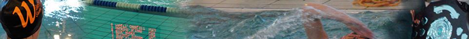</td>
			<td height=81></td>
		</tr>
		<tr valign=top>
			<td height=83></td>
			<td height=87 rowspan=2></td>
			<td height=83></td>
			<td height=83></td>
		</tr>
		<tr valign=top>
			<td height=4 colspan=2></td>
			<td height=4></td>
			<td height=4></td>
		</tr>
		<tr class="f-sp">
			<td></td>
			<td></td>
			<td></td>
			<td></td>
			<td height=9></td>
		</tr>
	</table>
	<table border=0 cellspacing=0 cellpadding=0 width=982>
		<colgroup>
			<col width=452>
			<col width=529>
			<col width=1>
		</colgroup>
		<tr valign=top>
			<td height=27></td>
			<td height=27><p class="topNav f-fp f-lp"><span class="style101"><a href="index.html" class="navHTML">Home</a> | </span><span class="style4"><a href="swim.html" class="navHTML"><span class="style101">Swim</span></a><span class="style101"> | </span><a href="news.html" class="navHTML"><span class="style101">News</span></a><span class="style101"> | </span><a href="meetscal.html" class="navHTML"><span class="style101">Meets</span></a><span class="style101"> | </span><a href="information.html" class="navHTML"><span class="style101">Information</span></a><span class="style101"> | </span><a href="memberssectiona.html" class="navHTML"><span class="style101">Members</span></a></span></p>
			</td>
			<td height=27></td>
		</tr>
		<tr class="f-sp">
			<td></td>
			<td></td>
			<td height=26></td>
		</tr>
	</table>
	<table border=0 cellspacing=0 cellpadding=0 width=981>
		<colgroup>
			<col width=22>
			<col width=149>
			<col width=9>
			<col width=800>
			<col width=1>
		</colgroup>
		<tr valign=top>
			<td height=154 rowspan=9></td>
			<td height=22></td>
			<td height=154 rowspan=9></td>
			<td height=24 rowspan=2></td>
			<td height=22></td>
		</tr>
		<tr valign=top>
			<td height=22 rowspan=3><a href="index.html" onmouseover="FWRestore(1,'Indigo');FWSRestore(top.frames,'Indigo');FWLSwap('img1',1,'Resources/item2.gif','','Indigo')" onmouseout="FWRestore(1,'Indigo');FWSRestore(top.frames,'Indigo')"></a></td>
			<td height=2></td>
		</tr>
		<tr valign=top>
			<td height=12608 rowspan=8 bgcolor="#ffffff" style="border:solid #fff 1px; padding:5px"><p class="body f-fp"><span class="blue"><span class="style21"> </span></span><span id="currentDateAction1"><script type="text/javascript">//<![CDATA[
				writeDate({day:true, lang:"en"});
				//]]></script></span></p>
			<p class="style198"><span class="style61"><strong>National Age events achieved by Winsford swimmers<br></strong></span><span class="style114">Alisha Hawkins - 1.5K open water - 800m Free - 400m Free<br>Adam Blackshaw - 200m Fly</span></p>
			<p class="style195"><strong>National Youth events achieved by Winsford swimmers<br></strong><span class="style72">Oliver Rose - 100m Breastroke<br>Ashley Hogg - 400 / 1500 Free - 2K open water - 100 / 200m Breastroke - 100 Fly - 200 / 400 IM</span></p>
			<p class="style180"><strong>Success at National Age Group 2014<br></strong><span class="blue"><span class="style27"><span class="blue"><span class="style190"><span class="blue"><span class="style27"><span class="blue"><span class="style27"><span class="blue"><span class="style190"><span class="blue"><span class="style27"><span class="blue"><span class="style27"><span class="blue"><span class="style190"><span class="blue"><span class="style27"><span class="blue"><span class="style27"><span class="blue"><span class="style190"><span class="blue"><span class="style211">Winsford Swimming Club had two National Age Group Qualifiers this season with Alisha Hawkins competing in the 400 Free, 800 Free and 1500 Open Water and Adam Blackshaw competing in the 200 Fly. For both Alisha and Adam this was there first time at the Nationals however they were both very determined to do good, very, very good.</span></span></span></span></span></span></span></span></span></span></span></span></span></span></span></span></span></span></span></span></span></span></span></span></p>
			<p class="style180"><span class="blue"><span class="style27"><span class="blue"><span class="style190"><span class="blue"><span class="style27"><span class="blue"><span class="style27"><span class="blue"><span class="style190"><span class="blue"><span class="style27"><span class="blue"><span class="style27"><span class="blue"><span class="style190"><span class="blue"><span class="style27"><span class="blue"><span class="style27"><span class="blue"><span class="style190"><span class="blue"><span class="style211">The National Championships in Sheffield is where the very fastest swimmers in Britain age 12-14 battle it out for National honors. The qualifying times are very tight and so to achieve a NQT is a great achievement in itself however we were not going there just make up the numbers. Both Alisha and Adam were going there to perform and that is what they did.</span></span></span></span></span></span></span></span></span></span></span></span></span></span></span></span></span></span></span></span></span></span></span></span></p>
			<p class="style180"><span class="blue"><span class="style27"><span class="blue"><span class="style190"><span class="blue"><span class="style27"><span class="blue"><span class="style27"><span class="blue"><span class="style190"><span class="blue"><span class="style27"><span class="blue"><span class="style27"><span class="blue"><span class="style190"><span class="blue"><span class="style27"><span class="blue"><span class="style27"><span class="blue"><span class="style190"><span class="blue"><span class="style211">First up was Adam Blackshaw in the boys 14 years 200 Fly. As you all know Adam lives for Fly and so it was no surprise that Adam swam very well. After 4 laps of the 50m pool he touched home in a time of 2.21.31, just shy off his PB however this was his fastest ever heat swim and it was a well fought race, coming well placed in his heat. Adam's overall placing was 17th which is a fantastic achievement. Adam's improvement in his swimming over the past season has been remarkable from not qualifying for the regional's to qualifying for the Nationals is brilliant and it just shows that all Adam's effort and commitment in training has paid off. Adam has already told me his targets for next season, unfortunately I can't tell you, confidential between swimmer and coach but needles to say after tasting National racing the experience has provided him with even more motivation for next season. Well Done Adam.</span></span></span></span></span></span></span></span></span></span></span></span></span></span></span></span></span></span></span></span></span></span></span></span></p>
			<p class="style180"><span class="blue"><span class="style27"><span class="blue"><span class="style190"><span class="blue"><span class="style27"><span class="blue"><span class="style27"><span class="blue"><span class="style190"><span class="blue"><span class="style27"><span class="blue"><span class="style27"><span class="blue"><span class="style190"><span class="blue"><span class="style27"><span class="blue"><span class="style27"><span class="blue"><span class="style190"><span class="blue"><span class="style211">Next up was Alisha in the 800 Free. Unfortunately I couldn't be there (Brothers wedding!) but Dave was pool side supporting Alisha on her swim. Alisha as always gave it her all and after 16 x 50m lengths she came away with a fantastic result of 9.34.71 a 3 second PB. Alisha went into the 800 ranked 22nd but came away with a 17th place, a fantastic achievement for her first ever National swim, sorry I wasn't there.</span></span></span></span></span></span></span></span></span></span></span></span></span></span></span></span></span></span></span></span></span></span></span></span></p>
			<p class="style180"><span class="blue"><span class="style27"><span class="blue"><span class="style190"><span class="blue"><span class="style27"><span class="blue"><span class="style27"><span class="blue"><span class="style190"><span class="blue"><span class="style27"><span class="blue"><span class="style27"><span class="blue"><span class="style190"><span class="blue"><span class="style27"><span class="blue"><span class="style27"><span class="blue"><span class="style190"><span class="blue"><span class="style211">Alisha's next race was the 400 Free, I was there this time! Alisha again swam to her best but unfortunately couldn't execute the race to perfection however it was valuable experienced gained and also it provided us all with a lot more determination to perform the following day in the Open Water.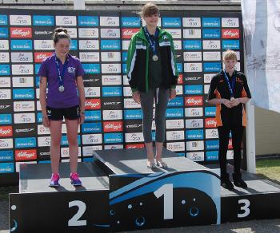</span></span></span></span></span></span></span></span></span></span></span></span></span></span></span></span></span></span></span></span></span></span></span></span></p>
			<p class="style180"><span class="blue"><span class="style27"><span class="blue"><span class="style190"><span class="blue"><span class="style27"><span class="blue"><span class="style27"><span class="blue"><span class="style190"><span class="blue"><span class="style27"><span class="blue"><span class="style27"><span class="blue"><span class="style190"><span class="blue"><span class="style27"><span class="blue"><span class="style27"><span class="blue"><span class="style190"><span class="blue"><span class="style211">Alisha's final race and probably the best race I have ever seen her do was the 1500m Open water swim. In Alisha's 13 year old race there were 17 swimmers racing. The race was stacked with talent, many Regional Champions were there, last years National Gold and Silver Medalist were there and this seasons National Champion over the 800m was also taking part, plus many more 800m finalist, so the field was very, very strong. The course was swum over 2 laps of 750m and it proved to be a very tight and competitive race with many bumps along the way! It was clear to see from the off this was going to be a physical race with all girls jostling for position but after around 500m it was clear to see that there was pack of around 6 girls out front, fighting it out, Alisha being one of them. Throughout the race there was positions changing all the time but after the last turn and leading into the last 200m Alisha was in 4th place but with a bit of help from cheering spectators Alisha managed to overtake the girl in 3rd place and touched home in BRONZE MEDAL position, 2 seconds clear of the 4th placed girl, had the course been another 5m longer a Silver would have been gained. Alisha had a superb sprint finish. Alisha gained a time of 19 minutes 25 seconds just 1 second off Silver and over 2 minutes faster than her race in Salford at the Regional Championships in June. This was a fantastic achievement to gain a National Bronze Medal and a place on the podium in a super strong field. This was Winsford SC first ever National Age Group Open Water National Medal. Well Done Alisha.</span></span></span></span></span></span></span></span></span></span></span></span></span></span></span></span></span></span></span></span></span></span></span></span></p>
			<p class="style180"><span class="blue"><span class="style27"><span class="blue"><span class="style190"><span class="blue"><span class="style27"><span class="blue"><span class="style27"><span class="blue"><span class="style190"><span class="blue"><span class="style27"><span class="blue"><span class="style27"><span class="blue"><span class="style190"><span class="blue"><span class="style27"><span class="blue"><span class="style27"><span class="blue"><span class="style190"><span class="blue"><span class="style211">As I type this the National Youth Championships will be taking place in Sheffield so we would like to wish all our swimmers: Individual qualifiers: Ashley Hogg, Oliver Rose and Team qualifiers: Ashley Hogg, Brandon Sharkey, Callum Chapple &amp; Alex Law and Dave all the very best for the week. Please keep looking at the web-site as Dave will write a full report on the Youth Champs plus a full report on Ashley Hoggs fantastic BRONZE medal success in the 2000m Open Water swim.</span></span></span></span></span></span></span></span></span></span></span></span></span></span></span></span></span></span></span></span></span></span></span></span></p>
			<p class="style180"><span class="blue"><span class="style27"><span class="blue"><span class="style190"><span class="blue"><span class="style27"><span class="blue"><span class="style27"><span class="blue"><span class="style190"><span class="blue"><span class="style27"><span class="blue"><span class="style27"><span class="blue"><span class="style190"><span class="blue"><span class="style27"><span class="blue"><span class="style27"><span class="blue"><span class="style190"><span class="blue"><span class="style211">Overall the National Age Groups were hugely successful for Alisha and Adam they both raced with great courage. I know there are others at Winsford SC who can gain qualification next season, I honestly believe that. Believe in yourself and work Hard and anything is possible. We achieve together.</span></span></span></span></span></span></span></span></span></span></span></span></span></span></span></span></span></span></span></span></span></span></span></span></p>
			<p class="style180"><span class="blue"><span class="style27"><span class="blue"><span class="style190"><span class="blue"><span class="style27"><span class="blue"><span class="style27"><span class="blue"><span class="style190"><span class="blue"><span class="style27"><span class="blue"><span class="style27"><span class="blue"><span class="style190"><span class="blue"><span class="style27"><span class="blue"><span class="style27"><span class="blue"><span class="style190"><span class="blue"><span class="style218">IMAGINE</span><span class="style225"> with all your mind. </span><span class="style218">BELIEVE</span><span class="style225"> with all your heart. </span><span class="style218">ACHIEVE</span><span class="style225"> with all your might.&nbsp;- Dan.</span></span></span></span></span></span></span></span></span></span></span></span></span></span></span></span></span></span></span></span></span></span></span></span></p>
			<p class="style180"><strong>British Gas International Meet<br></strong><span class="blue"><span class="style27"><span class="blue"><span class="style190"><span class="blue"><span class="style27"><span class="blue"><span class="style27"><span class="blue"><span class="style190"><span class="blue"><span class="style27"><span class="blue"><span class="style27"><span class="blue"><span class="style190"><span class="blue"><span class="style27"><span class="blue"><span class="style27"><span class="blue"><span class="style190"><span class="blue"><span class="style197">Two of our club swimmers Ashley Hogg and Oliver Rose qualified for this prestigious event in the swimming calendar and they were rubbing shoulders with some of the best swimmers in the British Isles. Adam Peaty, Benjamin Pround, Michael Jamieson, Sioban-Marie O'Connor and Robert Pavoni to name but a few. Ellie Simmonds the 2 times paraolympic champion was also competing at this meet&nbsp;</span></span></span></span></span></span></span></span></span></span></span></span></span></span></span></span></span></span></span></span></span></span></span></span></p>
			<p class="style212"><span class="blue"><span class="style27"><span class="blue"><span class="style190"><span class="blue"><span class="style27"><span class="blue"><span class="style27"><span class="blue"><span class="style190"><span class="blue"><span class="style27"><span class="blue"><span class="style27"><span class="blue"><span class="style190"><span class="blue"><span class="style27"><span class="blue"><span class="style27"><span class="blue"><span class="style190"><span class="blue"><span class="style197">Oliver had qualified for the 50m Breaststroke, competing in his first ever International meet and swimming against tough opposition, Oliver had to make a good start and maintain a very high stroke ratio in order for him to keep up with the faster swimmers. With having already qualified the 100m Breaststroke at this year’s National Youth Championships in August, this event gave Oliver the opportunity to race against potential contenders, so to impress the other swimmers in his heat, he did just that racing with a lot of determination and touched in 3rd place in a personal best of 31.59sec.</span></span></span></span></span></span></span></span></span></span></span></span></span></span></span></span></span></span></span></span></span></span></span></span></p>
			<p class="style212"><span class="blue"><span class="style27"><span class="blue"><span class="style190"><span class="blue"><span class="style27"><span class="blue"><span class="style27"><span class="blue"><span class="style190"><span class="blue"><span class="style27"><span class="blue"><span class="style27"><span class="blue"><span class="style190"><span class="blue"><span class="style27"><span class="blue"><span class="style27"><span class="blue"><span class="style190"><span class="blue"><span class="style197">Swimming in his second International Meet, was Ashley Hogg.  Ashley had qualified for the 400m Individual Medley, an event he will be competing in at this year’s National Youth Championships. Ashley’s national ranking in this event, is quite high, so making the final was simply a matter of swimming his heats in a reasonable time and without mistakes. With stroke strengths and weaknesses to consider, a race of this nature can be difficult to predict, it is, therefore, important for a swimmer to have four good competitive strokes and a fitness level that is extremely high to challenge the many changes they have to go through during this type of race.</span></span></span></span></span></span></span></span></span></span></span></span></span></span></span></span></span></span></span></span></span></span></span></span></p>
			<p class="style212"><span class="blue"><span class="style27"><span class="blue"><span class="style190"><span class="blue"><span class="style27"><span class="blue"><span class="style27"><span class="blue"><span class="style190"><span class="blue"><span class="style27"><span class="blue"><span class="style27"><span class="blue"><span class="style190"><span class="blue"><span class="style27"><span class="blue"><span class="style27"><span class="blue"><span class="style190"><span class="blue"><span class="style197">In the heats, Ashley showed a lot of maturity in swimming his strokes at the right pace and as the race unfolded he managed to extend his lead after what was an excellent Breaststroke leg, his time of 4min 36.24sec was a massive pb and had placed him in 2nd spot for the following day’s final. The final was very exciting to watch and although Ashley had achieved a lifetime best in the heats, a final can always throw up surprises.  The pressure of performing at a high level and the expectations of winning can affect the outcome. We knew there were faster swimmers that Ashley had to compete against and if he wanted a podium place, he would need to be at his very best.   </span></span></span></span></span></span></span></span></span></span></span></span></span></span></span></span></span></span></span></span></span></span></span></span></p>
			<p class="style212"><span class="blue"><span class="style27"><span class="blue"><span class="style190"><span class="blue"><span class="style27"><span class="blue"><span class="style27"><span class="blue"><span class="style190"><span class="blue"><span class="style27"><span class="blue"><span class="style27"><span class="blue"><span class="style190"><span class="blue"><span class="style27"><span class="blue"><span class="style27"><span class="blue"><span class="style190"><span class="blue"><span class="style197">Slightly down of his pace time from the previous day, with 2sec slower going into the freestyle leg, Ashley needed to push him-self to the limit if he wanted to get into the top three, with guts and determination; he managed hold off a challenge from other swimmers to clinch a 3rd place in a time of 4min 39.72sec (still faster than his entry time) - Dave</span></span></span></span></span></span></span></span></span></span></span></span></span></span></span></span></span></span></span></span></span></span></span></span></p>
			<p class="style180"><strong>Winsford Youngsters at Dev Meet<br></strong><span class="blue"><span class="style27"><span class="blue"><span class="style190"><span class="blue"><span class="style27"><span class="blue"><span class="style27"><span class="blue"><span class="style190"><span class="blue"><span class="style27"><span class="blue"><span class="style27"><span class="blue"><span class="style190"><span class="blue"><span class="style27"><span class="blue"><span class="style27"><span class="blue"><span class="style190"><span class="blue"><span class="style211">Congratulations to all 34 swimmers from Winsford who competed in our development meet on Saturday. The performances overall were incredible with some outstanding racing and some huge PB's, countless medals and top 6 placings were achieved over the 2 sessions. The winsford Development Meet is a meet for the less experienced but what a great experience it was for all swimmers. For many this their first taste of competitive swimming and I have to say all took on the challenge superbly and with great enjoyment for the racing. Racing isn't just about standing on the block and swimming it is how you prepare the whole day, each meet more and more will be learnt and that is what it is about for our youngsters, learning and progressing up the ladder.</span></span></span></span></span></span></span></span></span></span></span></span></span></span></span></span></span></span></span></span></span></span></span></span></p>
			<p class="style180"><span class="blue"><span class="style27"><span class="blue"><span class="style190"><span class="blue"><span class="style27"><span class="blue"><span class="style27"><span class="blue"><span class="style190"><span class="blue"><span class="style27"><span class="blue"><span class="style27"><span class="blue"><span class="style190"><span class="blue"><span class="style27"><span class="blue"><span class="style27"><span class="blue"><span class="style190"><span class="blue"><span class="style211">Thank you to each and every swimmer who represented Winsford SC, I have said this before and I will say it again it is so good to see so many youngsters racing and having fun at a meet, keep up the good work. Your professionalism is top of the class. Also a big thank you to all who made this meet possible and so successful. Someone said to me once that volunteers are so important for a successful swimming club, volunteers are the backbone of all clubs, this is so true at Winsford.</span></span></span></span></span></span></span></span></span></span></span></span></span></span></span></span></span></span></span></span></span></span></span></span></p>
			<p class="style180"><span class="blue"><span class="style27"><span class="blue"><span class="style190"><span class="blue"><span class="style27"><span class="blue"><span class="style27"><span class="blue"><span class="style190"><span class="blue"><span class="style27"><span class="blue"><span class="style27"><span class="blue"><span class="style190"><span class="blue"><span class="style27"><span class="blue"><span class="style27"><span class="blue"><span class="style190"><span class="blue"><span class="style211">It was a whole club team effort on Saturday, Well Done to one and all!: </span><span class="style222">&quot;Coming together is a beginning. Keeping together is progress. Working together is success.&quot; Henry Ford.</span><span class="style221"> - </span><span class="style222">T</span><span class="style221">ogether </span><span class="style222">E</span><span class="style221">veryone </span><span class="style222">A</span><span class="style221">chieves </span><span class="style222">M</span><span class="style221">ore. - Dan.</span></span></span></span></span></span></span></span></span></span></span></span></span></span></span></span></span></span></span></span></span></span></span></span></p>
			<p class="style180"><strong>Winsford Crusader League Champions<br></strong><span class="blue"><span class="style27"><span class="blue"><span class="style190"><span class="blue"><span class="style27"><span class="blue"><span class="style27"><span class="blue"><span class="style190"><span class="blue"><span class="style27"><span class="blue"><span class="style27"><span class="blue"><span class="style190"><span class="blue"><span class="style27"><span class="blue"><span class="style27"><span class="blue"><span class="style190"><span class="blue"><span class="style211">Congratulations to all swimmers who helped Winsford Swimming Club win the Crusader League 2014. The Crusader League is made up of 3 leagues, 1-3 (Winsford being in Division 1), over 3 rounds each division of teams battle it out, each round of points being tallied up to form a final league position. After 3 rounds of intense battle Winsford SC were crowned overall champions in Top Division 1.&nbsp;</span></span></span></span></span></span></span></span></span></span></span></span></span></span></span></span></span></span></span></span></span></span></span></span></p>
			<p class="style180"><span class="blue"><span class="style27"><span class="blue"><span class="style190"><span class="blue"><span class="style27"><span class="blue"><span class="style27"><span class="blue"><span class="style190"><span class="blue"><span class="style27"><span class="blue"><span class="style27"><span class="blue"><span class="style190"><span class="blue"><span class="style27"><span class="blue"><span class="style27"><span class="blue"><span class="style190"><span class="blue"><span class="style211">On the final night Round 3 in Fenton it was clear to see it was going to be a war, all teams were stronger and Leek especially so. It was like two boxers going at it toe to toe each fighter giving each other bloody noses and black eyes. Of course we never give in, we never took a step backwards we fought to the end. Winsford Swimmers have got granite chins and steal noses we were not going to be defeated. This was our day and our swimmers raced with great determination in all races.</span></span></span></span></span></span></span></span></span></span></span></span></span></span></span></span></span></span></span></span></span></span></span></span></p>
			<p class="style180"><span class="blue"><span class="style27"><span class="blue"><span class="style190"><span class="blue"><span class="style27"><span class="blue"><span class="style27"><span class="blue"><span class="style190"><span class="blue"><span class="style27"><span class="blue"><span class="style27"><span class="blue"><span class="style190"><span class="blue"><span class="style27"><span class="blue"><span class="style27"><span class="blue"><span class="style190"><span class="blue"><span class="style211">This is the first time Winsford SC have got our names on the Division 1 Crusader League trophy. It was an outstanding evening of racing with every swimmer stepping up to the plate. Thank you to all swimmers who represented Winsford Swimming Club, you were all animals, you were all fighters we were all a team. Only by binding together as a single force will we remain strong and unconquerable. Well Done to one and all.</span></span></span></span></span></span></span></span></span></span></span></span></span></span></span></span></span></span></span></span></span></span></span></span></p>
			<p class="style180"><strong>Scottish Nationals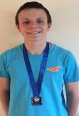<br></strong><span class="blue"><span class="style27"><span class="blue"><span class="style190"><span class="blue"><span class="style27"><span class="blue"><span class="style27"><span class="blue"><span class="style190"><span class="blue"><span class="style27"><span class="blue"><span class="style27"><span class="blue"><span class="style190"><span class="blue"><span class="style27"><span class="blue"><span class="style27"><span class="blue"><span class="style190"><span class="blue"><span class="style211">Congratulations to Adam Blackshaw who competed at the Scottish Nationals LC in Aberdeen over the weekend. Adam was racing his favorite event the 200 Fly. Adam raced the heat, swimming superbly well to reach the final which was later that same day. In the Final Adam swam out of his skin achieving a New PB and British National Qualifying Time of 2.19.33 (The NQT was 2.21.07) and a SILVER medal. This is Adams first NQT and National Medal, Well Done. Dan.</span></span></span></span></span></span></span></span></span></span></span></span></span></span></span></span></span></span></span></span></span></span></span></span></p>
			<p class="style180"><strong>Swim Cheshire and NWR Open Water<br></strong><span class="blue"><span class="style27"><span class="blue"><span class="style190"><span class="blue"><span class="style27"><span class="blue"><span class="style27"><span class="blue"><span class="style190"><span class="blue"><span class="style27"><span class="blue"><span class="style27"><span class="blue"><span class="style190"><span class="blue"><span class="style27"><span class="blue"><span class="style27"><span class="blue"><span class="style190"><span class="blue"><span class="style211">3 Swimmers from Winsford took the plunge in a sunny Salford Quays to race the 1500-2000m distance at the combined County and Regional championships this weekend. Representatives of Winsford SC were Alisha Hawkins, Becky Alderman &amp; Charlotte Pagett. All 3 are fairly inexperienced at racing Open Water but all swam fantastically well. Alisha gained Gold in both the County and Regional Championships, Becky Alderman gained Gold in the County Championships, Charlotte was also very highly ranked. It was a very successful Open Water event for Winsford, so much <span class="blue"><span class="style27"><span class="blue"><span class="style190"><span class="blue"><span class="style27"><span class="blue"><span class="style27"><span class="blue"><span class="style190"><span class="blue"><span class="style27"><span class="blue"><span class="style27"><span class="blue"><span class="style190"><span class="blue"><span class="style27"><span class="blue"><span class="style27"><span class="blue"><span class="style190"><span class="blue"><span class="style211">Alishas time proved to be the fastest of the 14yr girls and 14yr boys, a great achievement. </span></span></span></span></span></span></span></span></span></span></span></span></span></span></span></span></span></span></span></span></span></span></span></span>I know there are so many more swimmers at our club who could have done very well this weekend in Salford, Open water is growing all the time, it would be great to see more swimmers give it a go and possibly see many more from our club taking part in these Championships next year. Dan.</span></span></span></span></span></span></span></span></span></span></span></span></span></span></span></span></span></span></span></span></span></span></span></span></p>
			<p class="style180"><strong>Liverpool Sprints 2014<br></strong><span class="blue"><span class="style27"><span class="blue"><span class="style190"><span class="blue"><span class="style27"><span class="blue"><span class="style27"><span class="blue"><span class="style190"><span class="blue"><span class="style27"><span class="blue"><span class="style27"><span class="blue"><span class="style190"><span class="blue"><span class="style27"><span class="blue"><span class="style27"><span class="blue"><span class="style190"><span class="blue"><span class="style175">Congratulations to all 38 swimmers who represented Winsford SC at the Liverpool Summer Sprints. It was an absolutely fantastic weekend of racing for Winsford with so many superb swims. Winsford SC collected a magnificent 76&nbsp;Gold/Silver/Bronze Medals and an enormous amount of LC PB's. All swimmers raced with great skill and determination, it was great see so many youngsters taking up the opportunity of racing LC and gaining valuable experience. There is too many highlights to mention but I would like to say it was fantastic seeing so many Swimmers from Winsford SC in Liverpool, the team spirit was one of the best I have witnessed. We raced very fast but we also had a lot of fun! As well as all the Medals and PB's, Winsford swimmers picked up many top age group awards:</span></span></span></span></span></span></span></span></span></span></span></span></span></span></span></span></span></span></span></span></span></span></span></span></p>
			<p class="style180"><span class="blue"><span class="style27"><span class="blue"><span class="style190"><span class="blue"><span class="style27"><span class="blue"><span class="style27"><span class="blue"><span class="style190"><span class="blue"><span class="style27"><span class="blue"><span class="style27"><span class="blue"><span class="style190"><span class="blue"><span class="style27"><span class="blue"><span class="style27"><span class="blue"><span class="style190"><span class="blue"><span class="style224">9 Years Boys - 2nd&nbsp;Kyle Hawkins - 3rd Thomas Carrs<br>10 &amp; 11 Years Boys - 1st Jay Cushen - 2nd Finn Armitt - 3rd Ethan Wright<br>16 &amp; 17 Years Girls - 1st Becky Alderman<br>18 Years Over Boys - 1st Callum Chapple<br><br>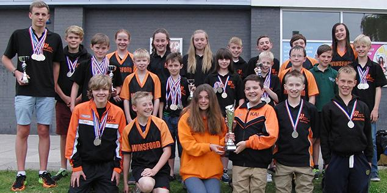<br>Congratulations to every swimmer who contributed to our Top Club award: Alex Moss, Amber Rose, Amelia Magee, Callum Chapple, Charlotte Howman, Charlotte Pagett, Daniel Hulme, Domiziana Dean, Ellie Cushen, Ethan Jones, Ethan Wright, Finn Armitt, Georgia Maundrill, Hannah Magee, Hannah McEnaney, Harry Armitt, Henry Oliver, James Adamson, Jay Cushen, Jonathan Mullet, Joshua Egerton, Joshua Fielden, Kai Knowles, Kate Kenworthy, Katie Wilson, Kyle Hawkins, Lydia Rose, Megan Barnett, Megan Wall, Oliver Egerton, Oscar Jolliffe, Rebecca Alderman, Rebecca Howman, Rory Armitt, Ryan Wheeler, Thomas Carrs, William Deeming, William Murray.</span></span></span></span></span></span></span></span></span></span></span></span></span></span></span></span></span></span></span></span></span></span></span></span></p>
			<p class="style180"><span class="blue"><span class="style27"><span class="blue"><span class="style190"><span class="blue"><span class="style27"><span class="blue"><span class="style27"><span class="blue"><span class="style190"><span class="blue"><span class="style27"><span class="blue"><span class="style27"><span class="blue"><span class="style190"><span class="blue"><span class="style27"><span class="blue"><span class="style27"><span class="blue"><span class="style190"><span class="blue"><span class="style224">&quot;Veni, Natavi, Vici&quot; First person who tells me what this means gets a handshake??!!</span></span></span></span></span></span></span></span></span></span></span></span></span></span></span></span></span></span></span></span></span></span></span></span></p>
			<p class="style180"><span class="blue"><span class="style27"><span class="blue"><span class="style190"><span class="blue"><span class="style27"><span class="blue"><span class="style27"><span class="blue"><span class="style190"><span class="blue"><span class="style27"><span class="blue"><span class="style27"><span class="blue"><span class="style190"><span class="blue"><span class="style27"><span class="blue"><span class="style27"><span class="blue"><span class="style190"><span class="blue"><span class="style228">Champions rise to the occasion!&nbsp;&nbsp;If it is to be, it is up to me!&nbsp;Believe.  -Dan Goodwin</span></span></span></span></span></span></span></span></span></span></span></span></span></span></span></span></span></span></span></span></span></span></span></span></p>
			<p class="style180"><strong>NWR AGE Champs 2014<br>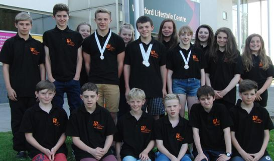<br></strong><span class="blue"><span class="style27"><span class="blue"><span class="style190"><span class="blue"><span class="style27"><span class="blue"><span class="style27"><span class="blue"><span class="style190"><span class="blue"><span class="style27"><span class="blue"><span class="style27"><span class="blue"><span class="style190"><span class="blue"><span class="style27"><span class="blue"><span class="style27"><span class="blue"><span class="style190"><span class="blue"><span class="style207"><strong>Congratulations</strong> to all swimmers who competed over the first weekend of the North West Regional Championships in Manchester. With a record 21 swimmers competing for Winsford Swimming Club we gained some superb PB's, Finalist's, Medals and a NQT. A Full report on all swimmers will follow after next weekends competition but a special mention to all those swimmers who gained top 8/final placings:</span></span></span></span></span></span></span></span></span></span></span></span></span></span></span></span></span></span></span></span></span></span></span></span></p>
			<p class="style180"><span class="blue"><span class="style27"><span class="blue"><span class="style190"><span class="blue"><span class="style27"><span class="blue"><span class="style27"><span class="blue"><span class="style190"><span class="blue"><span class="style27"><span class="blue"><span class="style27"><span class="blue"><span class="style190"><span class="blue"><span class="style27"><span class="blue"><span class="style27"><span class="blue"><span class="style190"><span class="blue"><span class="style207">Ethan Jones 7th 1500 Free<br>Alisha Hawkins 4th 200 Free &amp; 6th<strong> 400 Free National Qualifying Time</strong><br>Nick Law 3rd BRONZE Medal 100 Free<br>Adam Blackshaw 2nd SILVER 200 Fly<br>Jamie Young 6th 200 Fly</span></span></span></span></span></span></span></span></span></span></span></span></span></span></span></span></span></span></span></span></span></span></span></span></p>
			<p class="style180"><span class="blue"><span class="style27"><span class="blue"><span class="style190"><span class="blue"><span class="style27"><span class="blue"><span class="style27"><span class="blue"><span class="style190"><span class="blue"><span class="style27"><span class="blue"><span class="style27"><span class="blue"><span class="style190"><span class="blue"><span class="style27"><span class="blue"><span class="style27"><span class="blue"><span class="style190"><span class="blue"><span class="style207">Also well done to swimmers who were swimming an age group or two up, who would have gained top 8 finishes:<br>Jay Cushen 2nd 10 year old 200 BK<br>Ethan Wright 7th 11 year old 200 BK<br>Abbey Brown 5th 11 year old 400 Free<br>Finn Armitt 3rd 11 year old 200 Fly</span></span></span></span></span></span></span></span></span></span></span></span></span></span></span></span></span></span></span></span></span></span></span></span></p>
			<p class="style180"><span class="blue"><span class="style27"><span class="blue"><span class="style190"><span class="blue"><span class="style27"><span class="blue"><span class="style27"><span class="blue"><span class="style190"><span class="blue"><span class="style27"><span class="blue"><span class="style27"><span class="blue"><span class="style190"><span class="blue"><span class="style27"><span class="blue"><span class="style27"><span class="blue"><span class="style190"><span class="blue"><span class="style207">Also well done to the Boys 14 under relay team (Nick Law, Adam Blackshaw, Jamie Young, Jacob Robson) gaining: - 4x200 Free Relay 6th - 4x100 Medley Relay 10th - 4x100 Free Relay 6th</span></span></span></span></span></span></span></span></span></span></span></span></span></span></span></span></span></span></span></span></span></span></span></span></p>
			<p class="style180"><span class="blue"><span class="style27"><span class="blue"><span class="style190"><span class="blue"><span class="style27"><span class="blue"><span class="style27"><span class="blue"><span class="style190"><span class="blue"><span class="style27"><span class="blue"><span class="style27"><span class="blue"><span class="style190"><span class="blue"><span class="style27"><span class="blue"><span class="style27"><span class="blue"><span class="style190"><span class="blue"><span class="style222">The Biggest and Final Well Done goes to Alisha Hawkins</span><span class="style221"> who gained her NQT in the 400 Free, the NQT was 4.41.55, Alisha swam in a fantastic time of 4.39.53.</span></span></span></span></span></span></span></span></span></span></span></span></span></span></span></span></span></span></span></span></span></span></span></span></p>
			<p class="style180"><span class="blue"><span class="style27"><span class="blue"><span class="style190"><span class="blue"><span class="style27"><span class="blue"><span class="style27"><span class="blue"><span class="style190"><span class="blue"><span class="style27"><span class="blue"><span class="style27"><span class="blue"><span class="style190"><span class="blue"><span class="style27"><span class="blue"><span class="style27"><span class="blue"><span class="style190"><span class="blue"><span class="style221">It was a great weekend overall with so many positive swims and a number of swimmers so close to NQT's. It was a great effort from one and all.</span></span></span></span></span></span></span></span></span></span></span></span></span></span></span></span></span></span></span></span></span></span></span></span></p>
			<p class="style180"><span class="blue"><span class="style27"><span class="blue"><span class="style190"><span class="blue"><span class="style27"><span class="blue"><span class="style27"><span class="blue"><span class="style190"><span class="blue"><span class="style27"><span class="blue"><span class="style27"><span class="blue"><span class="style190"><span class="blue"><span class="style27"><span class="blue"><span class="style27"><span class="blue"><span class="style190"><span class="blue"><span class="style207"><strong>Congratulations</strong> to all swimmers who competed over both weekends in Manchester. Following on from a very successful first weekend, the second weekend was equally good. Top 8 placings and Medalists were as follows:</span></span></span></span></span></span></span></span></span></span></span></span></span></span></span></span></span></span></span></span></span></span></span></span></p>
			<p class="style180"><span class="blue"><span class="style27"><span class="blue"><span class="style190"><span class="blue"><span class="style27"><span class="blue"><span class="style27"><span class="blue"><span class="style190"><span class="blue"><span class="style27"><span class="blue"><span class="style27"><span class="blue"><span class="style190"><span class="blue"><span class="style27"><span class="blue"><span class="style27"><span class="blue"><span class="style190"><span class="blue"><span class="style207">Girls 10-14 Years 4x200 Free Relay (Alisha Hawkins, Olivia Capper, Eleanor O'Grady, Izz Burton) 7th<br>Boys 14 Years 200 Free, Nick Law 4th<br>Boys 14 Years 100 BK, Nick Law 7th</span></span></span></span></span></span></span></span></span></span></span></span></span></span></span></span></span></span></span></span></span></span></span></span><strong><span class="blue"><span class="style27"><span class="blue"><span class="style190"><span class="blue"><span class="style27"><span class="blue"><span class="style27"><span class="blue"><span class="style190"><span class="blue"><span class="style27"><span class="blue"><span class="style27"><span class="blue"><span class="style190"><span class="blue"><span class="style27"><span class="blue"><span class="style27"><span class="blue"><span class="style190"><span class="blue"><span class="style207"><br></span><span class="style222">Girls 13 Years 800 Free, Alisha Hawkins BRONZE 3rd, National Qualifying Time</span><span class="style221"><br>Girls 10-14 Years 4x100 Free Relay (Olivia Capper, Alisha Hawkins, Eleanor O'Grady, Izz Burton) 8th<br>Boys 11 Years 400 Free, Ethan Wright 5th<br>Boys 14 Years 100 Fly, Adam Blackshaw BRONZE 3rd<br>Boys 14 Years 100 Fly, Nick Law, 7th</span></span></span></span></span></span></span></span></span></span></span></span></span></span></span></span></span></span></span></span></span></span></span></span></strong></p>
			<p class="style180"><strong><span class="blue"><span class="style27"><span class="blue"><span class="style190"><span class="blue"><span class="style27"><span class="blue"><span class="style27"><span class="blue"><span class="style190"><span class="blue"><span class="style27"><span class="blue"><span class="style27"><span class="blue"><span class="style190"><span class="blue"><span class="style27"><span class="blue"><span class="style27"><span class="blue"><span class="style190"><span class="blue"><span class="style221">A special mention has to go to </span><span class="style222">Alisha Hawkins</span><span class="style221">, gaining her </span><span class="style222">National Qualifying Time</span><span class="style221"> in the girls 13 year old </span><span class="style222">800 Free</span><span class="style221">. Alisha needed a time of 9.41.25, but she achieved a time of </span><span class="style222">9.37.72</span><span class="style221">. This adds to her qualifying times in the 400 Free and the Open Water event. Well Done.</span></span></span></span></span></span></span></span></span></span></span></span></span></span></span></span></span></span></span></span></span></span></span></span></strong></p>
			<p class="style180"><strong><span class="blue"><span class="style27"><span class="blue"><span class="style190"><span class="blue"><span class="style27"><span class="blue"><span class="style27"><span class="blue"><span class="style190"><span class="blue"><span class="style27"><span class="blue"><span class="style27"><span class="blue"><span class="style190"><span class="blue"><span class="style27"><span class="blue"><span class="style27"><span class="blue"><span class="style190"><span class="blue"><span class="style221">I also have to mention Nick Law and Adam Blackshaw who were so very close to NQT's over the two weekends. Both boys raced fantastically well and showed superb maturity in all their races. Adam was a tenth of a second outside his 200 Fly and 1 hundredth of a second outside his 100 Fly NQT! Nick was only half a second off his 100 Free! Even though both just missed out their racing and attitude was always first class. Well Done.</span></span></span></span></span></span></span></span></span></span></span></span></span></span></span></span></span></span></span></span></span></span></span></span></strong></p>
			<p class="style180"><strong><span class="blue"><span class="style27"><span class="blue"><span class="style190"><span class="blue"><span class="style27"><span class="blue"><span class="style27"><span class="blue"><span class="style190"><span class="blue"><span class="style27"><span class="blue"><span class="style27"><span class="blue"><span class="style190"><span class="blue"><span class="style27"><span class="blue"><span class="style27"><span class="blue"><span class="style190"><span class="blue"><span class="style221">Above is the stand out performances in terms of top 8 placings but every single swimmer can take a lot away from the Championships. With so many youngsters qualifying this year the future is very bright at Winsford Swimming Club. We had over 200% more swimmers qualifying this year than the previous year and this shows that we as a club are developing a good strength in all age groups. Well Done to all qualifiers from Winsford Swimming Club, in Alphabetical order: </span><span class="style222">Abbey Brown, Adam Blackshaw, Alisha Hawkins, Alissa Blackshaw, Amber Rose, Charlotte Pagett, Daniel Hulme, Eleanor O'Grady, Ethan Jones, Ethan Wright, Finn Armitt, Isobella Burton, Jacob Robson, Jamie Young, Jay Cushen, Josh Egerton, Lydia Rose, Nick Law, Olivia Capper, Rebecca Howman, William Deeming.&nbsp;</span></span></span></span></span></span></span></span></span></span></span></span></span></span></span></span></span></span></span></span></span></span></span></span></strong></p>
			<p class="style180"><strong><span class="blue"><span class="style27"><span class="blue"><span class="style190"><span class="blue"><span class="style27"><span class="blue"><span class="style27"><span class="blue"><span class="style190"><span class="blue"><span class="style27"><span class="blue"><span class="style27"><span class="blue"><span class="style190"><span class="blue"><span class="style27"><span class="blue"><span class="style27"><span class="blue"><span class="style190"><span class="blue"><span class="style224">The Spirit is larger than the body. The body is pathetic compared to what we have inside us. - Dan</span></span></span></span></span></span></span></span></span></span></span></span></span></span></span></span></span></span></span></span></span></span></span></span></strong></p>
			<p class="style180"><strong>Conwy Whitsun, Llandudno<br></strong><span class="style220">Congratulations to all swimmers who raced in Llandudno at the Swim Conwy Meet. This must have been one of the largest teams we have ever taken to an away open meet, with over 40 swimmers taking part. It was a grueling weekend with Saturday starting at 8am and finishing at 8pm, but it was a real pleasure to see our swimmers rise to the challenge. That is what swimming and life in general is about, it is about challenging yourself and never, ever, ever giving up, no matter what. There were so many outstanding performances, too many to mention. So many Medals, PB's, and top 8 placings, but for me the most pleasure I saw was the racing and competing with other swimmers and the commitment to the racing. Racing requires guts, determination and a real character to win. Our swimmers love to race, race with fun and race without fear and that is what we all did in Llandudno. We came second top club overall, a special mention goes out to Lottie Howman (Top 9-10 year old girl) and to Jay Cushen (Top 10-11 year old boy). Thank You to all who attended and represented Winsford Swimming Club with great professionalism and thank you to all team managers and to all parents for your support.&nbsp;- Dan</span></p>
			<p class="style180"><span class="style220">Swimming is not about how bad you want success, it's about how hard you want to work for it.</span></p>
			<p class="style180"><strong>NWR Youth Champs 2014<br></strong><span class="style72">With a change of venue, Liverpool played host to the championships this year.   Winsford ASC  had a team of eight qualifying swimmers, 18 year old Alex Law, 17 year olds Callum Chapple and Amy Booth, 16 year olds Oliver Rose and Cameron Jones and 15 year olds Ashley Hogg, Brandon Sharkey and Jordan Gaskell.  They battled against the Region’s fastest swimmers and did themselves proud. Many of them gave personal best performances and some made it to the finals.<br><br>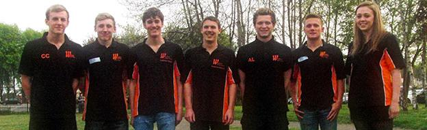</span></p>
			<p class="style204"><span class="style72">A total of eight medals were won with 15 year old Ashley Hogg and 16 year old Oliver Rose crowned as Regional Champions in two events.  Not only did Ashley win gold in the 400m Freestyle, he also won the 1500m Freestyle, breaking the 15 year old record. Oliver followed suit by taking gold in the 50m Breaststroke. Ashley also gained silver medals in the 400m Individual Medley and 100m Butterfly with Oliver winning a bronze in the 100m Breaststroke</span>.</p>
			<p class="style204">Another great achievement was gained in the Mens 4 x 200m Freestyle Relay Team.  The adrenaline kicked in and the Team fought hard to gain third place, just ahead of Liverpool.  The biggest reward to the Team is that they have earned a place at the British National Championships. Ashley and Oliver have already gained individual qualifying times to enter the British National Championships and the British Gas International Meet.</p>
			<p class="style195"><strong>North West Regional Age events achieved by Winsford swimmers<br></strong><span class="style72">Charlotte Pagett - 200 / 400 / 800m Free<br>Olivia Capper - 100 / 200 / 400 Free - 100 / 200 Breastroke - 100 Fly - 100 / 200 Backstroke - 200 / 400 IM<br>Alisha Hawkins - 100 / 200 / 400 / 800 Free - 100 / 200 Fly -  200 / 400 IM - 200m Backstroke<br>Lydia Rose - 100 / 200m Breastroke<br>Jamie Young - 100 / 200m Fly<br>Ethan Jones - 200m / 100m Backstroke - 100 / 200 / 400m / 1500m Free - 400 IM<br>Eleanor O'Grady - 200 / 400m Free<br>Adam Blackshaw - 100 / 200m Fly - 100 / 200 Backstroke - 100 / 400m Free - 200 IM<br>Alissa Blackshaw - 400m Free - 100m Backstroke<br>Finn Armitt - 200m Fly<br>Ethan Wright - 200m Backstroke -  400m Free<br>Rebecca Howman - 100m Fly - 100m Free<br>Jay Cushen - 200m Backstroke<br>Will Deeming - 200m Backstroke<br>Isobella Burton - 100m fly- 100 / 200m Backstroke <br>Daniel Hulme - 100m / 200m Backstroke - 200m / 400m Free - 400 IM<br>Amber Rose - 100m Free<br>Abbey Brown - 400m Free<br>Josh Egerton - 400m Free<br>Nick Law -</span></p>
			<p class="style195"><strong>North West Regional Youth events achieved by Winsford swimmers<br></strong><span class="style72">Ashley Hogg - 50 / 100 / 200 / 400 - 1500 Free &amp; 2K open water - 50 / 100 / 200 Breastroke - 50 / 100 / 200 Fly - 50 / 100 / 200 Backstroke - 200 / 400 IM<br>Bradon Sharkey - 50 / 100 / 400 Free - 40 / 100 / 200 Fly - 50 Breastroke - 200 / 400 IM<br>Jordan Gaskell - 200m Fly<br>Cameron Jones - 50 Free - 50 / 100m Backstroke - 400 IM - 200m Breastroke<br>Callum Chapple - 50 / 100 / 200 / 400 / 1500m Free - 50m Fly<br>Oliver Rose - 50 / 100 Free - 50 / 100 / 200 Breastroke - 50m Fly - 200m IM<br>Charlotte Carter - 50m Fly - 50m Backstroke<br>Amy Booth - 50 / 100 Backstroke</span></p>
			<p class="style213"><strong>Cyprus Swim Camp 2014<br></strong><span class="style72">We arrived in Cyprus after what had been the most successful County Championships (Short course) we have ever had, so the purpose of this camp was to act as a springboard into the next phase of our training and competition cycle, which is Long course Regionals and National Championships events.</span></p>
			<p class="style215">The camp allowed our top-end swimmers to train twice a day in a 50m pool in warm weather for six days without a break, including gym and land base training. The level of performance that had been reached exceeded our swimmers physical and mental expectations and a total of 88.000m was covered. (<strong><span id="item11"><a href="Resources/Cyprus%20Warm%20Weather%20Training%20Camp%20April%202014.docx">full report</a></span>)</strong></p>
			<p class="style212"><strong>Cheshire County Fantastic Champs 2014<br>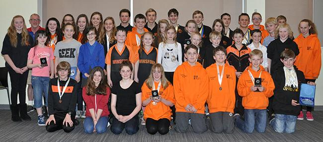<br></strong><span class="blue"><span class="style27"><span class="blue"><span class="style190"><span class="blue"><span class="style27"><span class="blue"><span class="style27"><span class="blue"><span class="style190"><span class="blue"><span class="style207">Winsford ASC completed a very successful two week run at the Cheshire County Championships recently. The biggest team to date qualified to compete and the swimmers did themselves, as well as coaches, Dave Pettengell and Dan Goodwin proud.  They brought home an impressive amount of medals as well as clocking up numerous North West Regional qualifying times and personal best times. In addition to the mammoth success of Ashley Hogg, it was great to see 9 year olds Harrison Aspinall and Kyle Hawkins compete for the first time and come back with medals and Top Boy awards.</span></span></span></span></span></span></span></span></span></span></span></span></p>
			<p class="style212"><span class="blue"><span class="style27"><span class="blue"><span class="style190"><span class="blue"><span class="style27"><span class="blue"><span class="style27"><span class="blue"><span class="style190"><span class="blue"><span class="style207">These Championships also saw a victorious 10 year old, Jay Cushen collect 11 gold and one silver medal, 13 year old Alisha Hawkins finish within a second of gaining a National qualifying time in the 800m freestyle event and 16 year old Oliver Rose swim out of his skin to bring home medals from the Age Group, Junior and Open categories. Medals were awarded to the top six boys and girls who amassed the most points in their age groups. Winsford ASC did exceptionally well, gaining 8 of these awards. </span></span></span></span></span></span></span></span></span></span></span></span></p>
			<p class="style216"><span class="blue"><span class="style27"><span class="blue"><span class="style190"><span class="blue"><span class="style27"><span class="blue"><span class="style27"><span class="blue"><span class="style190"><span class="blue"><span class="style207">The relays and ‘skins’ events proved to be extremely competitive and made fantastic viewing for an eager and very supportive crowd. In the 4x50m Freestyle and 4x50m Medley relays, Winsford did not disappoint.  Silver medals were won in the Mens Age Groups 10/12, 15/16 and Open and Womens Age Group 13/14. The Mens Age Group 10/12 and Womens 13/14 brought home bronze medals. There were far too many memorable performances to mention, but the Club’s success served as a great testament to Head Coach, Dave Pettengell. This was his final County Championships for Winsford ASC as he is set to retire at the end of the season. <span id="item9"><a href="Resources/Cheshire%20County%20Championships%202014%20B.docx">full report and results</a></span></span></span></span></span></span></span></span></span></span></span></span></span></p>
			<p class="style216"><span class="blue"><span class="style27"><span class="blue"><span class="style190"><span class="blue"><span class="style27"><span class="blue"><span class="style27"><span class="blue"><span class="style190"><span class="blue"><span class="style207">Ashley stormed the Cheshires with a massive medal haul<br>22 golds medals<br>5 Senior championship titles&nbsp;<br>7 Junior (16yrs &amp; under championship titles)<br>10 Age group (15yrs championship titles)<br>Top 15yr old<br>8 County records, including 5 Age groups, 2 Juniors and 1 Men's/Open<br>Record set in the following events: - &nbsp;100m Butterfly - 200m Butterfly - 200m Breaststroke - 200m Individual Medley&nbsp;- 400m Individual Medley - 400m Freestyle - 1500m Freestyle&nbsp;<br>Ashley also broke a long standing record set by Steven Mellor of Satellite over 25 years ago in the 400m Freestyle&nbsp; <span id="item10"><a href="Resources/Cheshires%20Ashley%20Hogg.docx">Ashleys Results</a></span></span></span></span></span></span></span></span></span></span></span></span></span></p>
			<p class="style195"><strong>Cheshires Long Course March 2014<br></strong><span class="blue"><span class="style27"><span class="blue"><span class="style190"><span class="blue"><span class="style27"><span class="blue"><span class="style27"><span class="blue"><span class="style190"><span class="blue"><span class="style207">Well Done to all 14 swimmers who raced in the 800 &amp; 1500 Free events on Friday 21st March at Liverpool LC. Winsford came away with a huge number of PB's and Medals. In total we gained 13 top 8 finishes of which 4 were in podium positions. We also gained numerous new Regional QT's. This just shows the strength Winsford SC have in the distance events not only in Liverpool but also in the previous weeks 400 metre events. Some of the swimming was incredible and it shows that all the training is paying off. So many swimmers are making giant strides forwards. Well Done again and lets keep up the outstanding work into the final week of the County Champs. <br>800 Free<br>Abbey Brown 4th 11 year old girl / Alissa Blackshaw 10th 12 year old girl / Alisha Hawkins 3rd 13 year old girl (5th overall girl) / Charlotte Pagett 5th 13 year old girl / Olivia Capper 8th 13 year old girl / Eleanor O Grady 3rd 14 year old girl / Hannah McEnaney 8th 14 year old girl / Hannah Young 4th 15 year old girl / Becky Alderman 2nd 16 year old girl<br>1500 Free<br>Ethan Jones 4th 12 year old boy / Will Deeming 8th 12 year old boy / Josh Egerton 6th 13 year old boy / Ashley Hogg 1st 15 year old boy (2nd overall boy) / Callum Chapple 6th overall boy</span></span></span></span></span></span></span></span></span></span></span></span></p>
			<p class="style195"><strong>Cotswolds Swim Camp Feb 2014<br>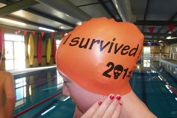   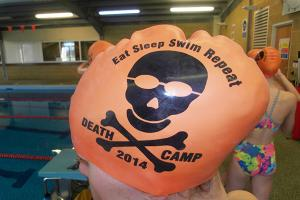<br></strong><span class="style202">On the 17th February 2014, 28 of the fiercest swimmers Winsford swimming club have ever had set off to Kingham Hill School in the Cotswolds to take part in a battle of the fittest. It was tough, very tough at times but the challenges were met head on by all <span class="style114">swimmers. - Dan</span></span></p>
			<p class="style195"><span class="style114">The 28 Survivors were : Kate Young, Hannah Young, Jordan Gaskell, Jamie Young, Adam Blackshaw, Eleanor o Grady, Alisha Hawkins, Becky Alderman, Izz Burton, Jacob Robson, Ethan Jones, Ethan Wright, Josh Egerton, Will Deeming, Dan Hulme, Charlotte Pagett, Alissa Blackshaw, Abbey Brown, Hannah McEnaney, Amber Rose, Lydia Rose, Domi Dean, Finn Armitt, Harry Armitt, Jay Cushen, Sophie Cliffe, Alice Deeming, Reece Hughes.</span></p>
			<p class="style176"><strong><span class="blue"><span class="style91"><span class="blue"><span class="style27"><span class="blue"><span class="style190"><span class="blue"><span class="style27"><span class="blue"><span class="style27"><span class="blue"><span class="style190"><span class="blue"><span class="style91">Cheshire Victorious <br></span></span></span></span></span></span></span></span></span></span></span></span></span></span></strong><span class="blue"><span class="style91"><span class="blue"><span class="style27"><span class="blue"><span class="style190"><span class="blue"><span class="style27"><span class="blue"><span class="style27"><span class="blue"><span class="style190"><span class="blue"><span class="style45">Swimmers selected from all clubs around Cheshire including our own Alisha Hawkins competed at Fenton Manor in the </span></span></span></span></span></span></span></span></span></span></span><span class="style45">Staffordshire ASA Junior Invitation Gala, in past years Cheshire have seen Warwickshire run away with the trophy, but not this year, Cheshire team won by a clear margin. Cheshire 243.5 - Warwickshire 200 - Staffordshire 174 - Leicestershire 173 - Worcester County 159.5 - Shropshire 89.</span></span></span></span></p>
			<p class="style195"><strong>Derventio Excel February Festival<br></strong><span class="style72">Winsford ASC took a small but very able team to the Derventio Excel Gala last weekend and brought home some silverware to boot. One of the Club’s rising stars, 12 year old Alisha Hawkins, was ranked first in the 200m Freestyle event and she did not disappoint.  She sailed through to victory taking her competitors by storm, gaining a gold medal as well as a personal best time.  She later followed up with a silver medal in the 400m Individual Medley.</span></p>
			<p class="style198"><span class="style72">Ten year old Jay Cushen also showed his mettle, taking gold in the 50m Breaststroke and silver medals in the 100m Freestyle and 100m Backstroke. Fifteen year old Ashley Hogg, a consistent winn</span>er, gained silver in the 50m Breaststroke and bronze medals in the 100m Butterfly and <span class="style134">4</span>00m Freestyle.  He also clocked up three personal best times and entry into the 100m Breaststroke final. </p>
			<p class="style198">It was a momentous occasion for 12 year old Charlotte Pagett. She swam out of her skin to be rewarded with not only a personal best, but a Regional Qualifying time in the 400m Freestyle. A personal best time was also attained in the 200m Freestyle. Brandon Sharkey swam well to earn himself a spot in the 15/16 year old 100m Butterfly final. <span class="style114">Sixteen year old Oliver Rose and 18 year old Charlotte Carter also took part in this high profile gala. Some of the UK’s Olympic swimmers were competing, so just to qualify to race was an achievement.</span></p>
			<p class="style176"><span class="blue"><span class="style91"><strong>Cheshire Junior Inviation Gala<br></strong></span><span class="style45">Congratulations to Alisha Hawkins who has been selected to represent Cheshire County at the Staffordshire ASA Junior Invitation Gala at Fenton Manor Stoke on the 2nd February. Cheshire county is a very strong swimming county and to be selected is a fantastic achievement. - Dan</span></span></p>
			<p class="style195"><strong>Top Swimmes - Top Club at Cannock Phoenix Feb 14<br></strong><span class="style114">Congratulations to all swimmers who represented Winsford swimming club at the Cannock phoenix open meet in Wolverhampton. A team of 40 swimmers contributed to Winsford being awarded top club for the second year running, winning by over 200 points. Also well done to Harrison Aspinall who was top boy in the 9 years category, and Kyle Hawkins who was 2nd  top 9 year old boy. Jay Cushen top 10 year old boy. Alissa Blackshaw 2nd  in the 11 year old girls category. Finn Armitt top 11 year old boy.  Alisha Hawkins top 12 year old girl and Olivia Capper 3rd . Will Deeming top 12 year old boy. Isobella Burton top 13 year old girl and Adam Blackshaw top 13 year old boy. Eleanor O Grady 2nd 14 year old girl and Jamie Young 2nd 14 year old boy. In the overall top female category Isobella Burton was top female and Alisha Hawkins 3rd and in the overall male category, Jay Cushen was 1st, Finn Amrit was 2nd and Adam Blackshaw was 3rd, giving Winsford Swimming Club a clean sweep in the boys overall category. The results above show how strong Winsford SC are becoming acroos all age ranges. It was a great team effort, every swimmer can take something positive away from the meet. Well done to every single swimmer who raced in Wolverhampton. Dan Goodwin</span></p>
			<p class="style195"><strong>North Mid Champs Jan 14 - Medals, Medals and more Medals<br></strong><span class="style72">Over two very long, very hot and very fast weekends Winsford SC took nearly 70 swimmers to Macclesfield to race against some of the best swimmers the North midlands had to offer. The team ranged from the experienced to the very new to competition.  It was a chance for us all to put all our Christmas training into a race situation and of course in true Winsford style we were tooled up ready for war! That is the best thing about our swimmers at winsford we have the biggest hearts and biggest guts, together we were unbreakable, together we all achieved so much. </span></p>
			<p class="style198">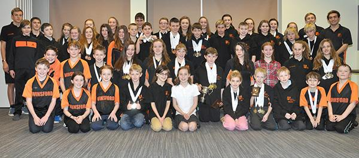</p>
			<p class="style198">This swimming club has had some fantastic success over the last few years but I have to say this was probably in my opinion the most successful team championships we have ever had. I don’t normally have the time or patience to count medals but I thought I would be like Carol Vorderman and do some maths! It took me fully 7 minutes to count all the medals but in the end I tallied up 120 medals! Now I don’t know what we have achieved in the past but that is an enormous amount. 120 medals!!!!!!!!! But I also did some more maths (Mr Williams my maths teacher from Sandbach School will be proud!), I worked out that the average age of the whole team was 11.98! Now I would say that is probably the youngest average age out of any club in the North Mids. We all achieved so much, so many PB’s (well over 90%), medals from all ages especially the youngsters, Regional times and some swimmers getting closer to National Times. We were all swimming so fast, with great skill and technique it was so pleasing to watch and it made me very proud of every single swimmer. <strong><span id="item8"><a href="Resources/NorthMids2014.doc">Full report</a></span></strong></p>
			<p class="style163"><strong>Derby Jan 14<br></strong><span class="style72">Winsford ASC continued their success when they sent a small team of five swimmers to Ponds Forge in Sheffield to compete in the City of Derby Long Course Meet at the weekend. The team consisted of Jessica Gallimore (18),  Alexander Law (17),  Callum Chapple (17), Oliver Rose (16) and Brandon Sharkey (15).</span></p>
			<p class="style133"><span class="style72">Once again, being a level 1 meet, the competition was attended by some of the best swimmers in the country.  This did not phase the swimmers at all as their aim, as always was to swim to the best of their ability in the hope of attaining personal best times or a coveted national qualifying time. Winning a medal of </span>course is a bonus, but not a priority. In the 50m Open Girls Backstroke, Jessica Gallimore showed off her swimming talents to the hilt.  She sailed through the race, finishing in style with a time of 31.14 seconds which is a national qualifying time. Personal best times were also gained in the 50m Freestyle, 100m Freestyle and 100m Backstroke.</p>
			<p class="style133">Callum Chapple earned a personal best in the 50m Butterfly whilst Alexander Law upped his game, attaining personal best times in the 200m Freestyle, 50m Butterfly and the 100m Butterfly. Two personal best times were gained by Oliver Rose in the 50m Breaststroke and 100m Butterfly and Brandon Sharkey pushed through to be rewarded with personal best times in the 200m Freestyle, 50m Breaststroke and the 100m Breaststroke. <span class="style114">Coach, Dave Pettengell said that he was very impressed with the level of support his team gave to each other as well as the display of team spirit and friendship.  A good weekend was had by all.</span></p>
			<p class="style163"><strong>Corby - Dec 2013<br></strong><span class="style72">Winsford swimmers travelled to Corby to take part in the very last competition of 2013. The competition was held at the 50m pool complex in Corby and was hosted by the Northampton Swimming Club. </span></p>
			<p class="style133">This was our 3rd visit to Corby and every time we have competed there, we have come away with a hat-full of medals and personal best times. Those who were taking part in this festive meet were Ashley Hogg, Alex Law, Cameron Jones, Ethan Jones, Brandon Sharkey and Callum Chapple.</p>
			<p class="style163"><span class="style114">Despite this meet having to be put back a week due to the Arena leagues being held the previous weekend, the level of competition was still tough enough to test our swimmers and for them to come away with medals and personal best times.<br><span id="item7"><a href="Resources/Corby%20report%2013.docx">Full report and placings </a></span></span></p>
			<p class="style163"><strong>Hincley Disability Gala<br></strong><span class="style114">Adam Blackburn travelled down the Leicestershire on Sunday the 8th December for the 33rd Hinckley Disability Swimming Gala , out of his three events he won 1st place in the 25m Breaststroke and freestyle and 2nd place in the 50m Breaststroke. He joined force with the Glossop Sharks for the 4 x 50m Freestyle relay where they won bronze.</span></p>
			<p class="style163"><strong>Arena A Final - Manchester 15 Dec 2013<br></strong><span class="style72">For the first time in Club history, Winsford Amateur Swimming Club achieved a place in the North West Division A final of the National Arena League which took place on Sunday 15th December at Manchester Aquatics Centre.The competing clubs were Liverpool, City of Salford, Stockport Metro, Ellesmere College Titans, Preston, Cockermouth, Warriors of Warrington and Winsford.</span></p>
			<p class="style133">Competing against seven of the biggest and best Clubs in the North West was always going to be a challenge but the Team came out fighting and determined to do their very best. Due to the size of the Club, most of the swimmers had to compete in multiple races.  However, in true Winsford style, they brushed aside any intimidation and swam through the tiredness to be the best that they could be, finishing in eighth position overall.</p>
			<p class="style133">Teamwork is an integral part of any Club and this certainly shone through on the day.  The swimmers did themselves and the Club proud and the certificate and banner presented to Club Captains James Shanley and Amy Booth will take pride of place in the trophy cabinet for all to see. To be keeping company with the calibre of those swimming clubs involved is a massive achievement which has effectively put Winsford ASC on the map as a force to be reckoned with. - Dave</p>
			<p class="style176"><span class="blue"><span class="style45">Congratulations to all swimmers who took part in this years National Arena League, rounds 1 &amp; 2 and in the A Final. This was the first time Winsford SC have ever achieved a place in the A Final against the true giants of NW and British Swimming. All swimmers raced with great determination, fight and desire. It was very pleasing to see our swimmers race and compete against the best in the region. It was a very tough gala for all clubs with so many excellent swimmers on show but I have to say it was fantastic to see Winsford SC there competing and doing so well. We finished 8th on the evening, which puts us as 8th best club in the North West out of 60 clubs who have entered the league in the NW. </span></span></p>
			<p class="style176"><span class="blue"><span class="style45">We are ranked as 3rd best club in Cheshire, only behind Stockport and Warrington and we are ranked top club in Cheshire West and Cheshire East. We have come on so much these last few years and it is thanks to Dave, all the coaches, teachers, committee and parents and most all the swimmers for all their hard work that this was all made possible. For a club our size we did fantastically well in the final, everybody should be very proud of themselves. You all made history for Winsford SC because this has never been achieved before at this swimming club. Well Done to one and all. Remember: Its not the size of the dog in the fight, its the size of the fight in the dog. - Dan Goodwin.</span></span></p>
			<p class="style163"><strong>Sheffield Snow Frills Nov 2013<br></strong><span class="style72">An elite, mean, fighting machine of 14 swimmers from Winsford SC travelled across the Pennines to compete in the Snow Frills L3 LC meet at Ponds Forge Sheffield, home of the National Championships. The spirit was very high amongst the camp and it showed in the racing. Our swimmers were on form, that was very clear to see with lots of medals, top 8 finishes and so many PB’s achieved and most of all so much experience gained racing LC.</span></p>
			<p class="style133">It was a chance to compete in a 50m pool against strong opposition. L3 LC meets are very rare, so it was an ideal opportunity for our swimmers to gain experience. We had a group of 14 swimmers taking part ranging from Callum and Cameron who have attended National Championships in the past, down to swimmers who have never raced LC before. We had a team with a range of ages and experience, so like a fine Vindaloo it was a beautiful mix of spices.</p>
			<p class="style163"><span class="style72">I do like to see the positives in all races but I have to say at this meet every swimmer performed fantastically well. Every swimmer can take a lot away from the meet. We had so many fast swims, great racing and medals. What pleased me the most though was the attitude of all swimmers, I did not hear one word of negativity it was very positive all weekend and that is why we swam and raced and performed. They say training is 90% physical, 10% mental and racing is 90% mental, 10% physical, our mentality was first class, so well done to all 14. <span id="item5"><a href="Resources/Frills%20at%20Snow%20Frills.doc">Frills full report</a></span></span></p>
			<p class="style163"><strong>Arena A Final - History in the making<br></strong><span class="blue"><span class="style27"><span class="blue"><span class="style145"><span class="blue"><span class="style27"><span class="blue"><span class="style145"><span class="blue"><span class="style27"><span class="blue"><span class="style145"><span class="blue"><span class="style27"><span class="blue"><span class="style145"><span class="blue"><span class="style27"><span class="blue"><span class="style145"><span class="blue"><span class="style27"><span class="blue"><span class="style145"><span class="blue"><span class="style27"><span class="blue"><span class="style145"><span class="blue"><span class="style27"><span class="blue"><span class="style177">I have been at Winsford for over 10 years and in it that time, we have competed in the National Arena league (formerly called the Speedo league) on two occasions. The first, was when we manged to make the Premier division for the first time, but after two seasons, we found that we couldn't sustain the level of competition due to a lack of quality swimmers at the bottom end of our age group band, so I decided to pull the club out of this leagues in order to re build a team that will one day be able to compete with the best.</span></span></span></span></span></span></span></span></span></span></span></span></span></span></span></span></span></span></span></span></span></span></span></span></span></span></span></span></span></span></span></span></p>
			<p class="style163"><span class="blue"><span class="style27"><span class="blue"><span class="style145"><span class="blue"><span class="style27"><span class="blue"><span class="style145"><span class="blue"><span class="style27"><span class="blue"><span class="style145"><span class="blue"><span class="style27"><span class="blue"><span class="style145"><span class="blue"><span class="style27"><span class="blue"><span class="style145"><span class="blue"><span class="style27"><span class="blue"><span class="style145"><span class="blue"><span class="style27"><span class="blue"><span class="style145"><span class="blue"><span class="style27"><span class="blue"><span class="style177">As a Swim21 Competitive Club, we were recommended to rejoin the Arena league and within three season, we had gained two promotions, one as Division One Champions, followed by being winners of last seasons Arena Premier Division B final. Going into this seasons league programme, we were expecting to have a much tougher time than we did last season, due to the big teams involved, but a great result at Blackpool, put us in a strong position going into round 2. With teams like Liverpool, Elesmere Collage and Southport taking part, our chances of making the A final looked very slim, however, never say never and when the final points were announced, we had reached over 200 which when added to the first round points total, was enough to put us into the A final and in 7th place.</span></span></span></span></span></span></span></span></span></span></span></span></span></span></span></span></span></span></span></span></span></span></span></span></span></span></span></span></span></span></span></span></p>
			<p class="style163"><span class="blue"><span class="style27"><span class="blue"><span class="style145"><span class="blue"><span class="style27"><span class="blue"><span class="style145"><span class="blue"><span class="style27"><span class="blue"><span class="style145"><span class="blue"><span class="style27"><span class="blue"><span class="style145"><span class="blue"><span class="style27"><span class="blue"><span class="style145"><span class="blue"><span class="style27"><span class="blue"><span class="style145"><span class="blue"><span class="style27"><span class="blue"><span class="style145"><span class="blue"><span class="style27"><span class="blue"><span class="style177">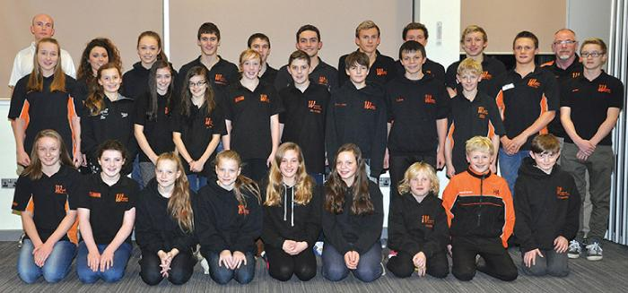</span></span></span></span></span></span></span></span></span></span></span></span></span></span></span></span></span></span></span></span></span></span></span></span></span></span></span></span></span></span></span></span></p>
			<p class="style163"><span class="blue"><span class="style27"><span class="blue"><span class="style145"><span class="blue"><span class="style27"><span class="blue"><span class="style145"><span class="blue"><span class="style27"><span class="blue"><span class="style145"><span class="blue"><span class="style27"><span class="blue"><span class="style145"><span class="blue"><span class="style27"><span class="blue"><span class="style145"><span class="blue"><span class="style27"><span class="blue"><span class="style145"><span class="blue"><span class="style27"><span class="blue"><span class="style145"><span class="blue"><span class="style27"><span class="blue"><span class="style177">This is a first for Winsford and to be competing in the A final at Manchester with the very best from the Northwest and Nationally, I feel very proud of our swimmers and the team of coaches and helpers who have made this possible.</span></span></span></span></span></span></span></span></span></span></span></span></span></span></span></span></span></span></span></span></span></span></span></span></span></span></span></span></span></span></span></span></p>
			<p class="style163"><span class="blue"><span class="style27"><span class="blue"><span class="style145"><span class="blue"><span class="style27"><span class="blue"><span class="style145"><span class="blue"><span class="style27"><span class="blue"><span class="style145"><span class="blue"><span class="style27"><span class="blue"><span class="style145"><span class="blue"><span class="style27"><span class="blue"><span class="style145"><span class="blue"><span class="style27"><span class="blue"><span class="style145"><span class="blue"><span class="style27"><span class="blue"><span class="style145"><span class="blue"><span class="style27"><span class="blue"><span class="style177">Swimmers missing from team photo include: Vicky Cunningham, Jessica Gallimore, Charlotte Carter, James Mitchell, Alex Mitchell &amp; Joshua Egerton </span></span></span></span></span></span></span></span></span></span></span></span></span></span></span></span></span></span></span></span></span></span></span></span></span></span></span></span></span></span></span></span></p>
			<p class="style163"><strong>Head Coach Retiring - Nov 2013<br></strong><span class="blue"><span class="style27"><span class="blue"><span class="style145"><span class="blue"><span class="style27"><span class="blue"><span class="style145"><span class="blue"><span class="style27"><span class="blue"><span class="style145"><span class="blue"><span class="style27"><span class="blue"><span class="style145"><span class="blue"><span class="style27"><span class="blue"><span class="style145"><span class="blue"><span class="style27"><span class="blue"><span class="style145"><span class="blue"><span class="style27"><span class="blue"><span class="style145"><span class="blue"><span class="style27"><span class="blue"><span class="style177">At the end of the 2013/2014 season, of our Head Coach Dave Pettengell, is retiring and stepping down as our long standing Head Coach. Dave has been with us at Winsford ASC, for more than eleven years, and his contribution cannot be covered in these few words. He has been instrumental in our development from a local Club to the Swim 21 accredited regional organisation that we are today.</span></span></span></span></span></span></span></span></span></span></span></span></span></span></span></span></span></span></span></span></span></span></span></span></span></span></span></span></span></span></span></span></p>
			<p class="style163"><span class="blue"><span class="style27"><span class="blue"><span class="style145"><span class="blue"><span class="style27"><span class="blue"><span class="style145"><span class="blue"><span class="style27"><span class="blue"><span class="style145"><span class="blue"><span class="style27"><span class="blue"><span class="style145"><span class="blue"><span class="style27"><span class="blue"><span class="style145"><span class="blue"><span class="style27"><span class="blue"><span class="style145"><span class="blue"><span class="style27"><span class="blue"><span class="style145"><span class="blue"><span class="style27"><span class="blue"><span class="style177">Dave has also developed swimming in the wider sense, with his establishment of the regional Skills Programme, and has done more than anyone to pull local Clubs together. He will be with us for the rest of this season, and will retain his links with us after he leaves the Head Coach role, both with his ASA Registration, and by returning to run Swim Clinics. There will be opportunities for us to thank Dave  both as a Club, and individually, and we should all look forward to some of the imaginative ideas of our Committee, swimmers and parents in this regard.</span></span></span></span></span></span></span></span></span></span></span></span></span></span></span></span></span></span></span></span></span></span></span></span></span></span></span></span></span></span></span></span></p>
			<p class="style163"><span class="blue"><span class="style27"><span class="blue"><span class="style145"><span class="blue"><span class="style27"><span class="blue"><span class="style145"><span class="blue"><span class="style27"><span class="blue"><span class="style145"><span class="blue"><span class="style27"><span class="blue"><span class="style145"><span class="blue"><span class="style27"><span class="blue"><span class="style145"><span class="blue"><span class="style27"><span class="blue"><span class="style145"><span class="blue"><span class="style27"><span class="blue"><span class="style145"><span class="blue"><span class="style27"><span class="blue"><span class="style177">We are also pleased to announce the appointment of Dan Goodwin to the role of Head coach from 2014 forwards, and see the Club going forward successfully under his coaching leadership. We will be advertising for the role of Assistant Coach to replace Dan in his current role, and Michael Secker will continue in his role of Head Teacher, and Coach to the transition Squad.</span></span></span></span></span></span></span></span></span></span></span></span></span></span></span></span></span></span></span></span></span></span></span></span></span></span></span></span></span></span></span></span></p>
			<p class="style163"><span class="blue"><span class="style27"><span class="blue"><span class="style145"><span class="blue"><span class="style27"><span class="blue"><span class="style145"><span class="blue"><span class="style27"><span class="blue"><span class="style145"><span class="blue"><span class="style27"><span class="blue"><span class="style145"><span class="blue"><span class="style27"><span class="blue"><span class="style145"><span class="blue"><span class="style27"><span class="blue"><span class="style145"><span class="blue"><span class="style27"><span class="blue"><span class="style145"><span class="blue"><span class="style27"><span class="blue"><span class="style177">It is our intention to hold a series of presentations for parents in the next few weeks. These will give Dan and Barry the opportunity to present how we see the Club continuing to develop, and offer parents the opportunity to ask questions or give their views on how they see the Club going forward.</span></span></span></span></span></span></span></span></span></span></span></span></span></span></span></span></span></span></span></span></span></span></span></span></span></span></span></span></span></span></span></span></p>
			<p class="style163"><span class="blue"><span class="style27"><span class="blue"><span class="style145"><span class="blue"><span class="style27"><span class="blue"><span class="style145"><span class="blue"><span class="style27"><span class="blue"><span class="style145"><span class="blue"><span class="style27"><span class="blue"><span class="style145"><span class="blue"><span class="style27"><span class="blue"><span class="style145"><span class="blue"><span class="style27"><span class="blue"><span class="style145"><span class="blue"><span class="style27"><span class="blue"><span class="style145"><span class="blue"><span class="style27"><span class="blue"><span class="style177">Dan had few words to say - Over the past few years Winsford Swimming Club has grown into one of the best clubs in the County, for me one of the best pound for pound clubs in the region. As being appointed Head coach starting next season I want to move the club forward, I want to get the best out of each and every swimmer whatever their competitive level by providing a stimulating and challenging environment. I want Winsford SC and all of our swimmers to succeed. That is why I am here today to help each swimmer to reach their goals and dreams. I honestly believe we can and will move forwards together as a team and a club, all of us working together to achieve some special things. I am at Winsford SC for only one reason and that is for you the swimmers, together we can achieve anything.</span></span></span></span></span></span></span></span></span></span></span></span></span></span></span></span></span></span></span></span></span></span></span></span></span></span></span></span></span></span></span></span></p>
			<p class="style136"><strong>Conwy Autumn Open Oct 2013<br></strong><span class="style72">28 Swimmers made the journey across the border into the beautiful North Wales countryside and onto the sea side resort of Llandudno. Llandudno is a Victorian town with lovely charm and lots of places to visit, BUT we were not there for a holiday and we were not there to play all day on the slot machines and we were not there to paddle in the sea or eat fish, chips and mushy peas, we there to Swim, Race and WIN. The team was made up of all ages from Boys vice Captain Alex Law down to the youngest competitors 9 year olds Harrison Aspinall and Rory Armitt. The team however on the whole was very young, very committed and above all very, very hungry. Hunger is vital, a hunger to race, to succeed, to attack and to be brave is so important when we are in battle.</span></p>
			<p class="style199">When I arrived on pool side early on Saturday morning I just knew it was going to be a great weekend of swimming, I just knew our swimmers wanted to race. The weather was dark, cold and wet but that was good because I knew I would be indoors for most of the weekend. The meet took place at the Llandudno swimming centre a pool built for competition. There was ample space poolside, ample spectators, great scoreboard, constant 2m depth and a training pool and it close to McDonalds. It was a great place to race and a great place to watch racing. There were 6 sessions in total and a gruelling schedule with both the 800 and 1500 free part of the programme. Many of our swimmers raced a lot of events over different strokes and distances, it is so important for a young swimmers progression to race all strokes. Our swimmers gained valuable race experience, PB’s, Regional, County and North Midland QT’s. We gained a huge number of medals. It was very pleasing to see so many swimmers, swimming fast. It was clear to see that those swimmers who have put in the time into training have got the rewards. </p>
			<p class="style199">There were so many highlights and so many medals won it would be impossible to mention them all. We had success all across the weekend but the event we had huge success on was on the 200 IM for both Boys and Girls. This was an event where we had so many entries and so many new PB’s. It was great to see all our swimmers racing with skill over the 4 strokes and to see our swimmers attacking the event. This event for all our Junior and Age group swimmers is our bread and butter (or for some parents cheese!) event, the IM is so important for our swimmers development. IM, IM, IM, IM and IM that is what our youngsters dream about at night.</p>
			<p class="style199"><span class="style114">Dan Goodwin. <span id="item4"><a href="Resources/Fast%20Swimming%20at%20Conwy%20Open.docx">Conwy full report</a></span></span></p>
			<p class="style136"><strong>Robin Hood Oct 2013<br></strong><span class="style72">Winsford Amateur Swimming Club had yet another very successful weekend at the Robin Hood Open Gala hosted at Ponds Forge, Sheffield.</span></p>
			<p class="style199">This was a level one gala so the competition was fierce in all events. The Club took along a team of only nineteen swimmers but they all rose to the challenge and achieved 6th place in the Top Club table and 4th place in the Top Men table – quite an achievement for a small club. This meet also gave awards for Top Male.  15 year old Ashley Hogg achieved second place and 10 year old Ethan Wright gained eighth place. There were too many brilliant performances to list all of them individually, but a special mention goes to Ethan Wright.  All his hard work paid off and he managed some substantial Personal Best performances, winning 2 gold, 2 silver and 3 bronze medals.</p>
			<p class="style199">A plethora of medals were brought home and the winning performances are as follows:<br>Boys 400m Freestyle – 10yr  Jay Cushen, Silver &amp; 15yr Ashley Hogg, Gold.<br>Boys 50m Backstroke – 10yr Jay Cushen, Bronze, 15yr Ashley Hogg, Silver &amp; 16yr/Over Alex Law, Bronze.<br>Boys 100m Breaststroke - 16 yr/Over Oliver Rose, Gold.<br>Boys 200m Butterfly – 15yr Ashley Hogg, Silver.<br>Boys 200m Breaststroke – 10yr Ethan Wright, Bronze, 15yr Ashley Hogg, Gold &amp; 16yr/Over Oliver Rose, Bronze.<br>Boys 50m Butterfly – 10yr Ethan Wright, Silver &amp; 15yr Ashley Hogg, Silver.<br>Boys 100m Freestyle – 10yr Ethan Wright, Gold &amp; 15yr Brandon Sharkey, Bronze.<br>Boys 200m Backstroke – 15yr Ashley Hogg, Bronze.<br>Boys 200m Individual Medley – 10yr Ethan Wright, Gold.<br>Boys 100m Butterfly – 15yrs Ashley Hogg, Silver &amp; Brandon Sharkey, Bronze.<br>Boys 50m Freestyle – 15yr Ashley Hogg, Silver.<br>Boys 200m Freestyle – 10yr Ethan Wright, Bronze &amp; 15yr Ashley Hogg, Bronze.<br>Boys 100m Backstroke – 10yr Ethan Wright, Bronze.<br>Boys 50m Breaststroke – 10yr Ethan Wright, Silver &amp; 15yr Ashley Hogg, Gold.</p>
			<p class="style136"><span class="style114">A big well done to all the team. Eleanor O’Grady, Isobella Burton, Hannah McEnaney, Charlotte Pagett, Katie Wilson, Rebecca Alderman, Olivia Capper, Lydia &amp; Amber Rose, Kate &amp; Hannah Young, Ashley Hogg, Alex Law, Callum Chapple, Jay Cushen, Brandon Sharkey, Ethan Wright, Oliver Rose and finally to Club Captain extraordinaire, James Shanley.</span></p>
			<p class="style136"><strong>Teaspoon Sheffield Sept 2013 - Sheffield Steel<br></strong><span class="style72">A team of 17 swimmers from Winsford Swimming club took part in the City of Sheffield, Teaspoon Sprint Meet at the tropically hot Ponds Forge. This meet is geared towards a whole range of swimmers from some who are just starting out in their careers to some who are at the top of their game and a lot more senior. Winsford SC had a very young team at Sheffield with the oldest being only 13 years old but that didn’t faze them one bit. In fact I was very impressed with the attitude, determination and most of all their fearless approach to alien territory! There were some fantastic swimmers on show (vast majority from our club) from a whole range of clubs from as far north as Dumfries to as far south as New Zealand it was a meet for all. Winsford came to race fast and that is what we all did.</span></p>
			<p class="style199">We had 17 swimmers representing Winsford in steel country and boy those swimmers were strong, very strong and I don’t mean physically so much because they are still very young and have got a lot of growing to do, I mean mentally unbreakable (it’s not the size of the dog in the fight, it’s the size of the fight in the dog). Each race getting stronger and stronger, each race more determined and each race having fun, and lots of it. Our swimmers achieved an uncountable number of PB’s, Teaspoons (for top 3 swimmers), finals and most of all Long Course racing experience and also experience of swimming heats and finals (which is rare nowadays). </p>
			<p class="style199">As always quote of the day:</p>
			<p class="style199">&quot;When I go out and race, I'm not trying to beat opponents, I'm trying to beat what I have done ... to beat myself, basically. People find that hard to believe because we've had such a bias to always strive to win things. If you win something and you haven't put everything into it, you haven't actually achieved anything at all. When you've had to work hard for something and you've got the best you can out of yourself on that given day, that's where you get satisfaction from.&quot; - Ian Thorpe</p>
			<p class="style199">Some say he eats spiders for breakfast, some say he shaves with a toothbrush, we just know he is the Stig!! Sorry as I wrote this report I was watching Top Gear on Dave channel!!!</p>
			<p class="style136 f-lp"><span class="style72">See you all at training; the more you train the better you will be.  - Dan Goodwin - <span id="item3"><a href="Resources/Sheffield%20Teaspoon%20Meet.doc">Teaspoon full report</a></span><br>&nbsp;</span></p>
			</td>
			<td height=1></td>
		</tr>
		<tr valign=top>
			<td height=19></td>
		</tr>
		<tr valign=top>
			<td height=22><a href="swim.html" onmouseover="FWRestore(1,'Indigo');FWSRestore(top.frames,'Indigo');FWLSwap('img2',1,'Resources/item2b.gif','','Indigo')" onmouseout="FWRestore(1,'Indigo');FWSRestore(top.frames,'Indigo')"></a></td>
			<td height=22></td>
		</tr>
		<tr valign=top>
			<td height=22><a href="news.html" onmouseover="FWRestore(1,'Indigo');FWSRestore(top.frames,'Indigo');FWLSwap('img3',1,'Resources/item2b1.gif','','Indigo')" onmouseout="FWRestore(1,'Indigo');FWSRestore(top.frames,'Indigo')"></a></td>
			<td height=22></td>
		</tr>
		<tr valign=top>
			<td height=22><a href="meetscal.html" onmouseover="FWRestore(1,'Indigo');FWSRestore(top.frames,'Indigo');FWLSwap('img4',1,'Resources/item2b2.gif','','Indigo')" onmouseout="FWRestore(1,'Indigo');FWSRestore(top.frames,'Indigo')"></a></td>
			<td height=22></td>
		</tr>
		<tr valign=top>
			<td height=22><a href="information.html" onmouseover="FWRestore(1,'Indigo');FWSRestore(top.frames,'Indigo');FWLSwap('img5',1,'Resources/item2b3.gif','','Indigo')" onmouseout="FWRestore(1,'Indigo');FWSRestore(top.frames,'Indigo')"></a></td>
			<td height=22></td>
		</tr>
		<tr valign=top>
			<td height=22><a href="memberssectiona.html" onmouseover="FWRestore(1,'Indigo');FWSRestore(top.frames,'Indigo');FWLSwap('img6',1,'Resources/item2b4.gif','','Indigo')" onmouseout="FWRestore(1,'Indigo');FWSRestore(top.frames,'Indigo')"></a></td>
			<td height=22></td>
		</tr>
		<tr valign=top>
			<td height=12490 colspan=3></td>
			<td height=12490></td>
		</tr>
		<tr class="f-sp">
			<td></td>
			<td></td>
			<td></td>
			<td></td>
			<td height=1></td>
		</tr>
	</table>
</div>
</body>

<!-- Mirrored from www.winsfordasc.co.uk/news2014.html by HTTrack Website Copier/3.x [XR&CO'2014], Sat, 05 Sep 2015 05:58:10 GMT -->
</html>
